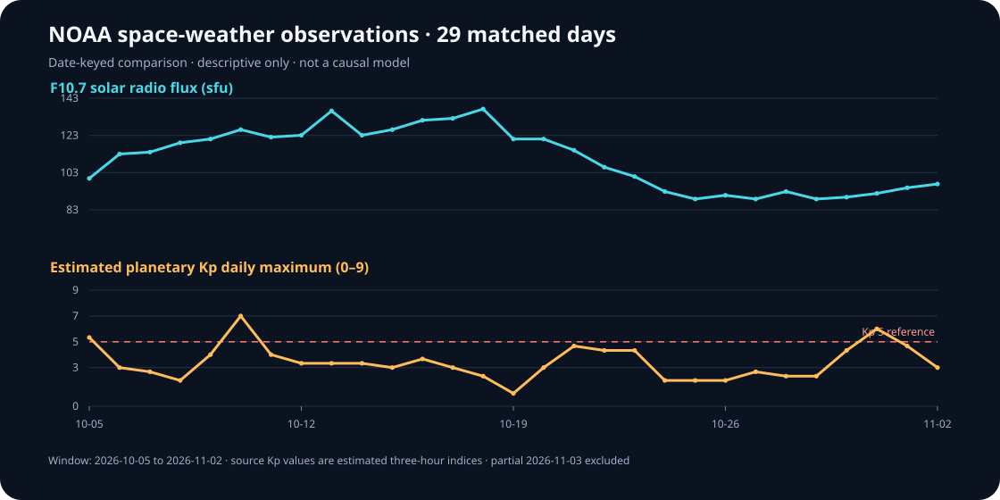

Signal Atlas · observed data collection · v0.7
Data Explorer
Follow two public NOAA measurement feeds from frozen input files through a date-keyed table, a teaching chart, and a machine-readable research packet.
29complete matched dates
2026-10-05first joined date
2026-11-02last joined date
3days with estimated daily Kp maximum at or above 5
Compare without mixing scales
F10.7 is shown in solar flux units; planetary Kp is an estimated geomagnetic index. Separate panels retain their different units and meanings.

Daily joined values
| Date label | F10.7 (sfu) | Kp mean | Kp max | Threshold summary |
|---|---|---|---|---|
| 2026-10-05 | 100 | 3.62 | 5.33 | Kp 5+ reached |
| 2026-10-06 | 113 | 2.46 | 3.00 | below 5 |
| 2026-10-07 | 114 | 1.38 | 2.67 | below 5 |
| 2026-10-08 | 119 | 1.54 | 2.00 | below 5 |
| 2026-10-09 | 121 | 2.33 | 4.00 | below 5 |
| 2026-10-10 | 126 | 4.12 | 7.00 | Kp 5+ reached |
| 2026-10-11 | 122 | 2.67 | 4.00 | below 5 |
| 2026-10-12 | 123 | 1.75 | 3.33 | below 5 |
| 2026-10-13 | 136 | 2.67 | 3.33 | below 5 |
| 2026-10-14 | 123 | 2.38 | 3.33 | below 5 |
| 2026-10-15 | 126 | 2.17 | 3.00 | below 5 |
| 2026-10-16 | 131 | 2.54 | 3.67 | below 5 |
| 2026-10-17 | 132 | 1.46 | 3.00 | below 5 |
| 2026-10-18 | 137 | 1.46 | 2.33 | below 5 |
| 2026-10-19 | 121 | 0.50 | 1.00 | below 5 |
| 2026-10-20 | 121 | 1.92 | 3.00 | below 5 |
| 2026-10-21 | 115 | 3.17 | 4.67 | below 5 |
| 2026-10-22 | 106 | 3.42 | 4.33 | below 5 |
| 2026-10-23 | 101 | 2.33 | 4.33 | below 5 |
| 2026-10-24 | 93 | 1.46 | 2.00 | below 5 |
| 2026-10-25 | 89 | 1.42 | 2.00 | below 5 |
| 2026-10-26 | 91 | 1.12 | 2.00 | below 5 |
| 2026-10-27 | 89 | 1.67 | 2.67 | below 5 |
| 2026-10-28 | 93 | 1.83 | 2.33 | below 5 |
| 2026-10-29 | 89 | 0.83 | 2.33 | below 5 |
| 2026-10-30 | 90 | 2.12 | 4.33 | below 5 |
| 2026-10-31 | 92 | 3.50 | 6.00 | Kp 5+ reached |
| 2026-11-01 | 95 | 3.25 | 4.67 | below 5 |
| 2026-11-02 | 97 | 1.62 | 3.00 | below 5 |
Open the underlying collection
One-minute solar-wind observations
Open the v0.8 Solar-wind Explorer for paired plasma and magnetic-field measurements, source switching, and partial-day coverage.